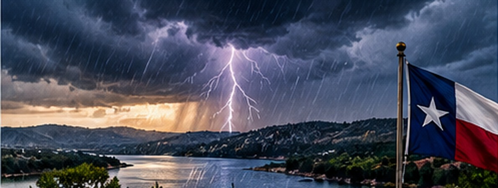

Texas Storm Season: How Hill Country Residents Can Prepare for Extended Outages
Severe storms and flash flooding make household readiness relevant even without an international crisis.

In Central Texas, thunderstorms, flash floods, lightning and power interruptions are familiar hazards. A preparedness plan should reflect local geography: low-water crossings can become dangerous quickly, and outages can interrupt communications and cooling or heating.
What the guidance means
Identify a safe indoor shelter, keep phones charged, know how to receive weather warnings, and avoid driving through floodwater. Store enough water and essential supplies for your household and check on neighbors who may need assistance.
Important context
The National Weather Service issues hazard-specific watches and warnings. Follow local emergency managers for immediate instructions, and never treat a general preparedness article as an active weather warning.
Official background: Government or agency guidance. This original TNS explainer distinguishes ongoing public preparedness advice from an active emergency.